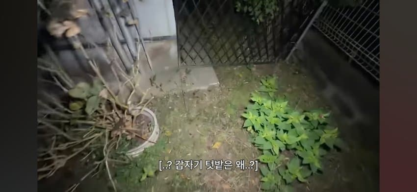
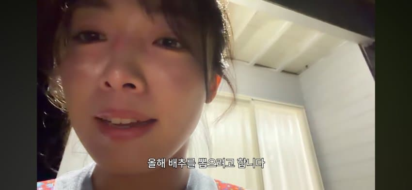
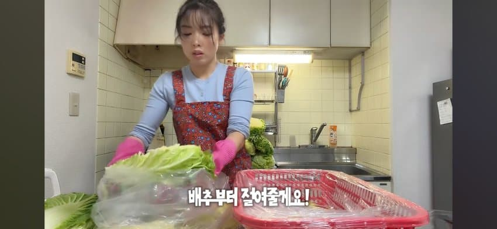
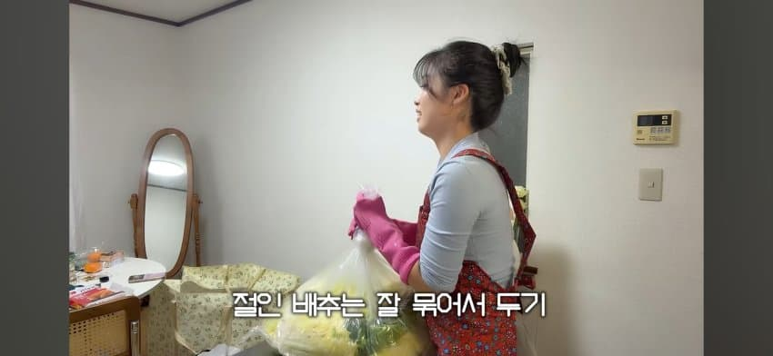
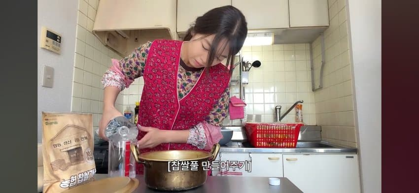
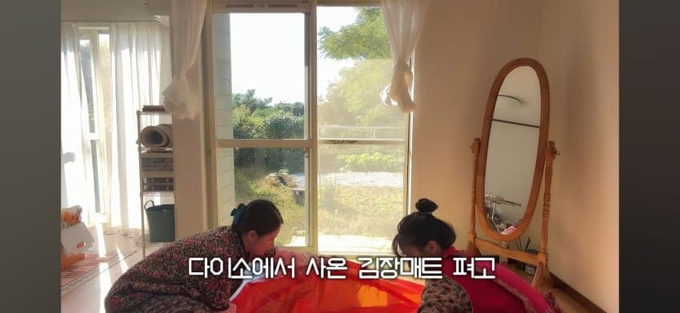
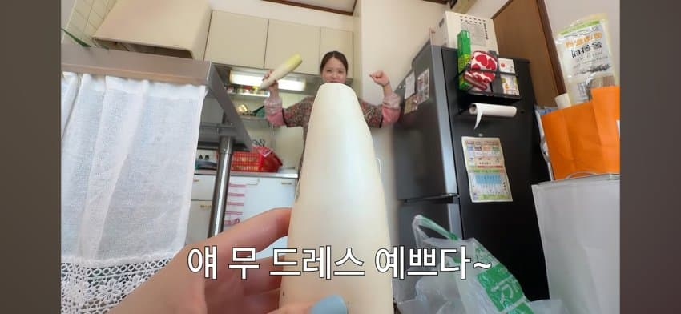
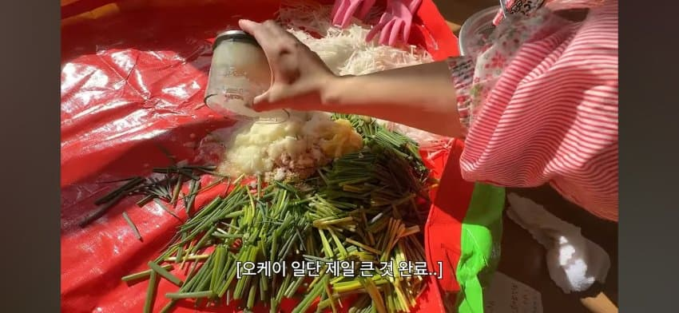
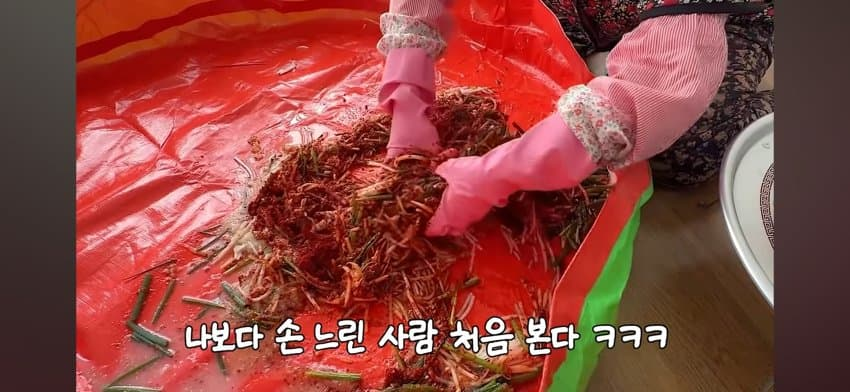
동생 구박ㅋㅋㅋ
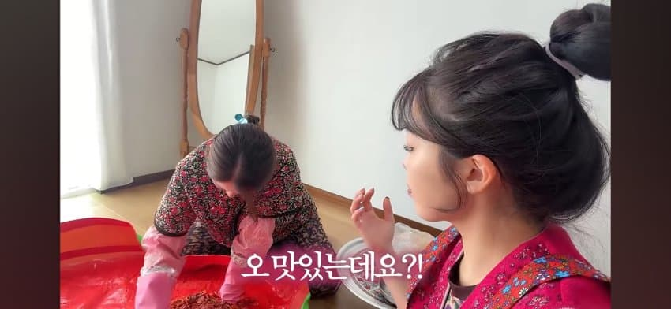
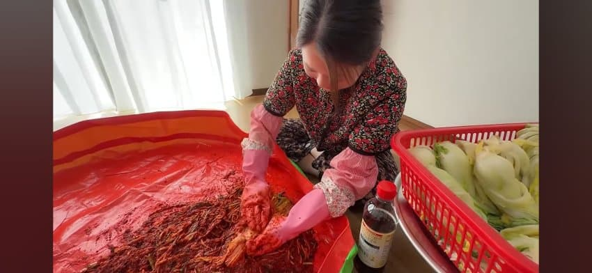
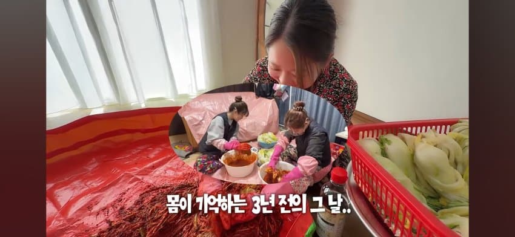
* 동생은 회사다니는데
주말에 김장도와주러 온거라함
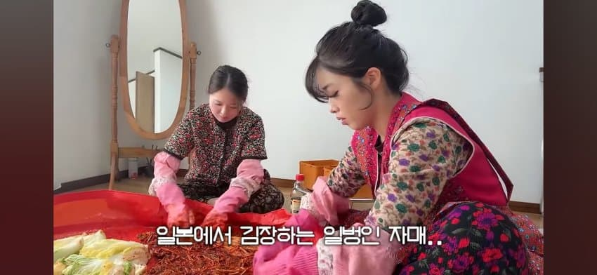
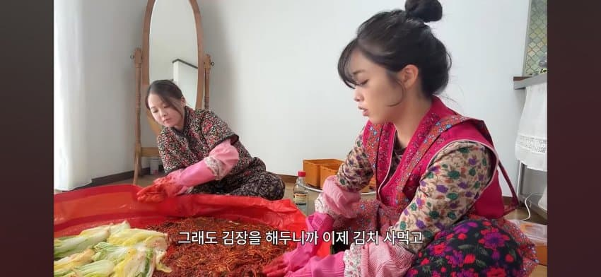
수육도 삶아주고
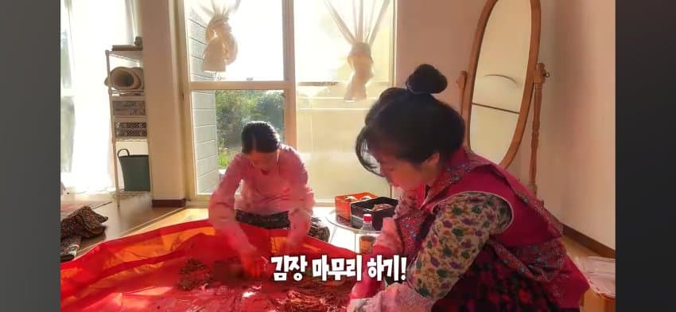
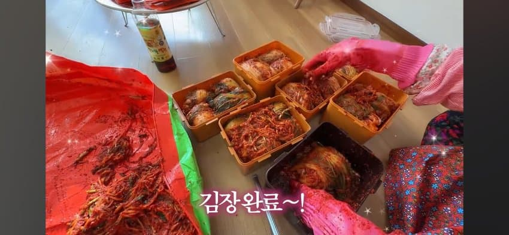
넉다운 귀엽누 ㅋㅋㅋ
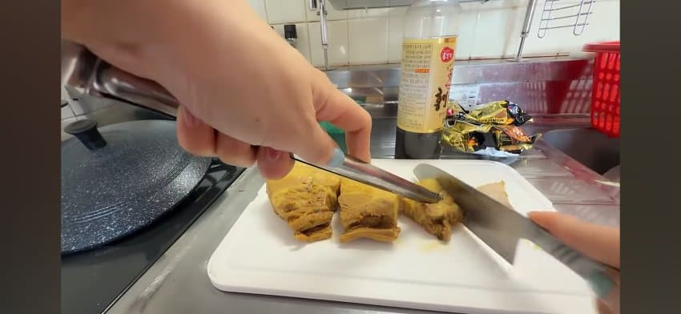
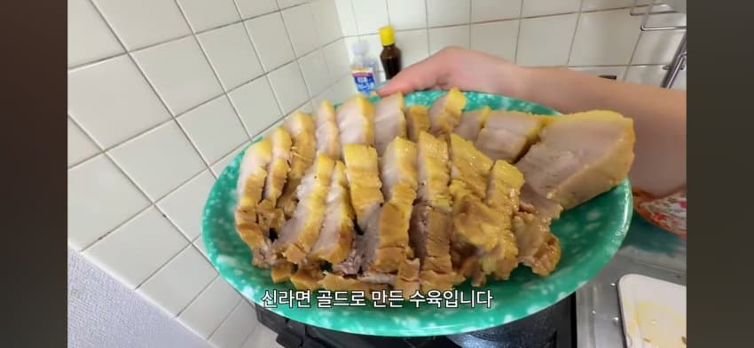
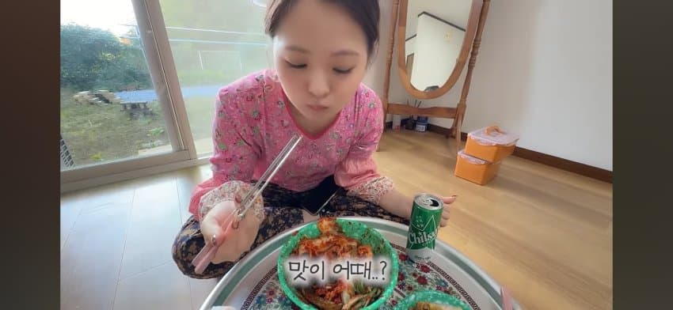
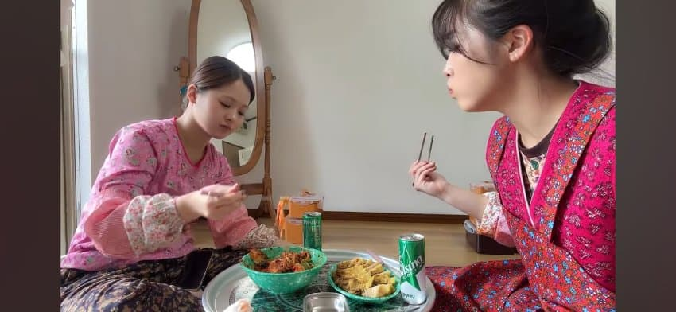
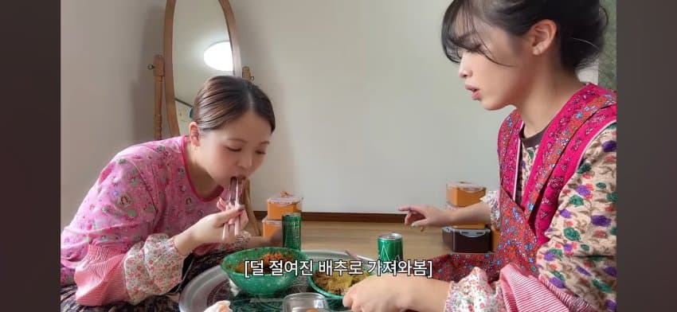
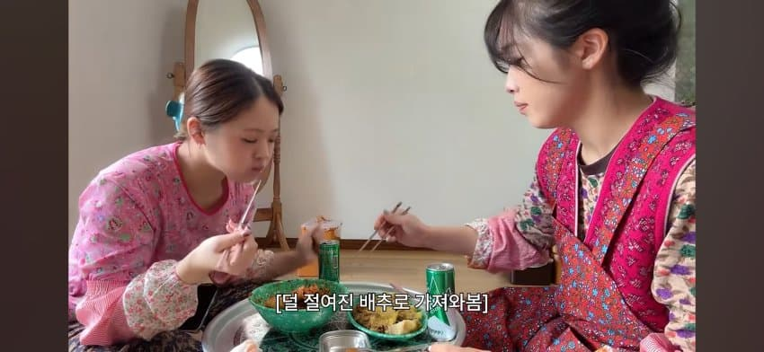
사스가 일본여자
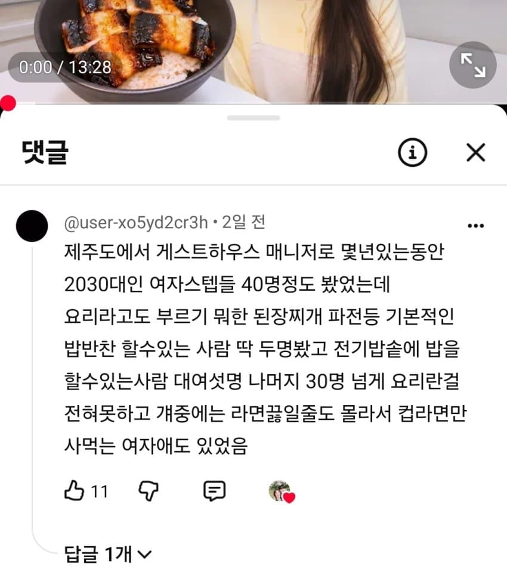
아..
댓글
수집 당시 댓글 334개
· ㅇㅇ · 11.28 15:48:18
· ㅇㅇ · 11.28 15:49:18
淘汰韓女：
国際結婚
市場から
除外された
ㅇㅇ · 11.28 15:38:09
韓女の
奇形児率は
伝説だ
· ㅇㅇ · 11.28 15:38:42
· ㅇㅇ · 11.28 15:39:31
· ㅇㅇ · 11.28 15:42:39
· ㅇㅇ · 11.28 15:43:46
· ㅇㅇ · 11.28 15:43:59
ㅇㅇ · 11.28 15:40:10
ㅇㅇ · 11.28 15:40:31
· ㅇㅇ · 11.28 15:43:57
· ㅇㅇ · 11.28 15:45:25
ㅇㅇ · 11.28 15:43:04
· ㅇㅇ · 11.28 15:43:34
ㅇㅇ · 11.28 15:43:44
아흐
ㅇㅇ · 11.28 15:46:05
韓国男子の
国際結婚率
が上がる
理由：
· ㅇㅇ · 11.28 15:46:20
韓女が
外国女子の
女性性に
負けたから
· ㅇㅇ · 11.28 15:48:47
· ㅇㅇ · 11.28 15:49:04
· ㅇㅇ · 11.28 15:49:45
· ㅇㅇ · 11.28 15:50:14
ㅇㅇ · 11.28 15:53:16
ㅇㅇ · 11.28 15:53:36
ㅇㅇ · 11.28 15:53:54
ㅇㅇ · 11.28 15:54:53
대
· ㅇㅇ · 11.28 15:54:58
황
· ㅇㅇ · 11.28 15:55:04
본
· ㅇㅇ · 11.28 15:59:02
· ㅇㅇ · 11.28 15:59:50
가짜일본인들임
택갈이짱깨년들
· ㅇㅇ · 11.28 16:00:54
· ㅇㅇ · 11.28 16:01:47
· ㅇㅇ · 11.28 16:04:12
· ㅇㅇ · 11.28 16:05:48
피콩. · 11.28 16:04:03
ㅇㅇ · 11.28 16:04:53
ㅇㅇ · 11.28 16:06:19
出産
227万↓
障害児
2万↑
ㅇㅇ · 11.28 16:06:33
韓女の
奇形児率は
伝説だ
ㅇㅇ · 11.28 16:14:08
ㅇㅇ · 11.28 16:17:38
ㅇㅇ · 11.28 16:17:42
ㅇㅇ · 11.28 16:17:46
· ㅇㅇ · 11.28 16:52:50
ㅇㅇ · 11.28 16:17:50
ㅇㅇ · 11.28 16:35:49
도태
한남
· ㅇㅇ · 11.28 18:17:51
니애미
창녀
조센징의안락사 · 11.28 16:39:02
· 조센징의안락사 · 11.28 16:40:52
· ㅇㅇ · 11.28 16:56:49
· 조센징의안락사 · 11.28 16:57:41
· ㅇㅇ · 11.28 16:59:03
· 조센징의안락사 · 11.28 17:00:14
· ㅇㅇ · 11.28 17:03:51
ㅇㅇ · 11.28 16:42:58
00 · 11.28 16:44:53
· ㅇㅇ · 11.28 17:01:18
· 00 · 11.28 17:05:32
· ㅇㅇ · 11.28 17:06:18
· 공정성장 · 11.28 17:32:07
· 00 · 11.28 17:33:15
ㅇㅇ · 11.28 16:45:34
ㅇㅇ · 11.28 16:47:59
ㅇㅇ · 11.28 16:51:57
ㅇㅇ · 11.28 16:56:41
· ㅇㅇ · 11.28 17:21:39
조센징의안락사 · 11.28 16:59:39
· 조센징의안락사 · 11.28 17:01:39
· 조센징의안락사 · 11.28 17:04:43
· ㅇㅇ · 11.28 17:04:53
· ㅇㅇ · 11.28 17:09:16
🇹🇼🇨🇳💩💀
· 조센징의안락사 · 11.28 17:10:55
· ㅇㅇ · 11.28 17:13:49
반박을 못하는 소추섬짱🤏😭🇹🇼
ㅇㅇ · 11.28 17:11:49
자이니치 짱깨년들
在日支那
ㅇㅇ · 11.28 17:17:20
· ㅇㅇ · 11.28 17:20:07
ㅇㅇ · 11.28 17:22:07
· ㅇㅇ · 11.28 17:22:13
ㄹㄹ · 11.28 17:36:22
ㅇㅇ · 11.28 17:36:24
ㅇㅇ · 11.28 17:38:38
· ㅇㅇ · 11.28 18:42:58
ㅇㅇ · 11.28 17:38:39
ㅇㅇ · 11.28 17:42:42
ㅇㅇ · 11.28 17:43:07
ㅇㅇ · 11.28 17:53:08
ㅇㅇ · 11.28 18:19:36
ㅇㅇ · 11.28 18:22:54
윤어게인 · 11.28 18:38:15
ㅇㅇ · 11.28 18:41:24
ㅇㅇ · 11.28 18:47:44
· ㅇㅇ · 11.28 18:50:31
ㅇㅇ · 11.28 18:53:31
ㅇㅇ · 11.28 18:54:39
ㅇㅇ · 11.28 18:56:08
ㅇㅇ · 11.28 18:56:54
ㅇㅇ · 11.28 19:10:43
ㅇㅇ · 11.28 19:19:53
ㅇㅇ · 11.28 19:20:52
ㅇㅇ · 11.28 19:40:47
ㅇㅇ · 11.28 19:46:04
ㅇㅇ · 11.28 19:59:40
· ㅇㅇ · 11.28 14:11:21
· ㅇㅇ · 11.28 14:11:43
· ㅇㅇ · 11.28 14:12:25
· ㅇㅇ · 11.28 14:12:47
· ㅇㅇ · 11.28 14:13:41
· ㅇㅇ · 11.28 14:15:01
· ㅇㅇ · 11.28 14:17:25
· ㅇㅇ · 11.28 14:18:34
· ㅇㅇ · 11.28 14:19:57
· ㅇㅇ · 11.28 14:21:27
· ㅇㅇ · 11.28 14:21:52
· ㅇㅇ · 11.28 14:22:18
· ㅇㅇ · 11.28 14:23:13
· ㅇㅇ · 11.28 14:24:59
· ㅇㅇ · 11.28 14:26:38
· ㅇㅇ · 11.28 14:27:07
· ㅇㅇ · 11.28 14:40:49
· ㅇㅇ · 11.28 15:09:04
· ㅇㅇ · 11.28 16:32:38
· ㅇㅇ · 11.28 17:20:12
ㅇㅇ · 11.28 14:03:53
ㅇㅇㅇ · 11.28 14:10:33
· ㅇㅇ · 11.28 14:10:55
· ㅇㅇㅇ · 11.28 14:12:30
· ㅇㅇ · 11.28 14:13:36
· ㅇㅇㅇ · 11.28 14:14:04
Doll · 11.28 14:11:06
ㅇㅇ · 11.28 14:14:17
프갤러 · 11.28 14:15:02
ㅇㅇ · 11.28 14:16:25
ㅇㅇ · 11.28 14:18:34
ㅇㅇ · 11.28 14:20:58
· ㅇㅇ · 11.28 15:49:45
· ㅇㅇ · 11.28 15:49:58
· ㅇㅇ · 11.28 17:36:04
ㅇㅇ · 11.28 14:26:30
ㅇㅇ · 11.28 14:26:45
ㅇㅇ · 11.28 14:31:52
ㅇㅅㅇ · 11.28 14:32:07
ㅇㅇ · 11.28 14:32:16
ㅇㅇ · 11.28 14:32:17
· ㅇㅇ · 11.28 14:32:49
ㅇㅇ · 11.28 14:33:59
히이잉 · 11.28 14:35:10
ㅇㅇ · 11.28 14:36:49
· ㅇㅇ · 11.28 15:03:18
ㅇㅇ · 11.28 14:39:23
· ㅇㅇ · 11.28 14:44:56
· ㅇㅇ · 11.28 16:05:42
파오차이녀
잠이안와유 · 11.28 14:42:37
ㅇㅇ · 11.28 14:43:14
일본인 아닌데? 중국인인데???
ㅇㅇ · 11.28 14:43:47
在日華人
고쿠라주민 · 11.28 14:49:08
· ㅇㅇ · 11.28 14:51:57
ㅇㅇ · 11.28 14:50:40
· ㅇㅇ · 11.28 14:50:57
새로뜬달 · 11.28 14:54:41
히이잉 · 11.28 14:55:10
· ㅇㅇ · 11.28 15:06:43
🇹🇼🇨🇳💩💀
ㅇㅇ · 11.28 14:57:36
· ㅇㅇ · 11.28 15:04:46
· ㅇㅇ · 11.28 15:05:53
🇹🇼🇨🇳💩💀
· ㅇㅇ · 11.28 15:07:00
· ㅇㅇ · 11.28 15:09:25
· ㅇㅇ · 11.28 15:10:23
· ㅇㅇ · 11.28 15:13:24
· ㅇㅇ · 11.28 15:14:31
· ㅇㅇ · 11.28 15:19:46
· ㅇㅇ · 11.28 15:22:14
· ㅇㅇ · 11.28 15:24:31
· ㅇㅇ · 11.28 15:37:39
· ㅇㅇ · 11.28 16:02:19
· 00 · 11.28 16:43:11
ㅇㅇ · 11.28 14:57:40
🇨🇳
원또 · 11.28 15:01:23
ㅇㅇ · 11.28 15:04:44
ㅇㅇ · 11.28 15:09:52
· ㅇㅇ · 11.28 15:11:39
니엔테 · 11.28 15:13:52
히이잉 · 11.28 15:15:08
· ㅇㅇ · 11.28 15:16:18
ㅇㅇ · 11.28 15:17:49
ㅇㅇ · 11.28 15:18:03
· ㅇㅇ · 11.28 15:18:09
ㅇㅇ · 11.28 15:23:35
ㅇㅇ · 11.28 15:28:13
ㅇㅇ · 11.28 15:30:50
· ㅇㅇ · 11.28 15:33:25
퀸스라이크 · 11.28 15:33:52
· ㅇㅇ · 11.28 16:00:36
· 엳붕이 · 11.28 16:44:48
공정성장 · 11.28 15:37:29
ㅇㅇ · 11.28 15:37:36
出産
227万↓
障害児
2万↑
· ㅇㅇ · 11.28 15:40:38
🇹🇼🇨🇳💩💀 일본은 친구
· ㅇㅇ · 11.28 15:41:47
· ㅇㅇ · 11.28 15:43:07
· ㅇㅇ · 11.28 15:44:38
· ㅇㅇ · 11.28 15:44:57
· ㅇㅇ · 11.28 15:46:05
· ㅇㅇ · 11.28 15:47:27
· 크리스티아노 · 11.28 13:39:34
· 모코코- · 11.28 13:46:06
· 2456778 · 11.28 14:03:33
ㅇㅇ · 11.28 13:30:55
· ㅇㅇ · 11.28 13:31:51
ㅇㅇ · 11.28 13:31:02
· ㅇㅇ · 11.28 13:31:25
· ㅇㅇ · 11.28 13:31:46
ㅇㅇ · 11.28 13:31:40
· ㅇㅇ · 11.28 13:34:59
ㅇㅇ · 11.28 13:31:50
다람디 · 11.28 13:32:11
· Bocchida · 11.28 13:33:51
· 안락사 · 11.28 13:38:23
· 크리스티아노 · 11.28 13:39:25
· 모코코- · 11.28 13:46:37
· 2456778 · 11.28 14:03:12
ㅇㅇ · 11.28 13:32:44
ㅇㅇ · 11.28 13:33:07
히이잉 · 11.28 13:33:16
ㅇㅇ · 11.28 13:33:34
ㅇㅇ · 11.28 13:35:20
ㅇㅇ · 11.28 13:35:48
씹덕1029일차 · 11.28 13:36:31
ㅇㅇ · 11.28 13:36:42
식물빌런 · 11.28 13:37:11
ㅇㅇ · 11.28 13:37:52
ㅇㅇ · 11.28 13:38:01
· ㅇㅇ · 11.28 13:38:38
안락사 · 11.28 13:38:06
· 크리스티아노 · 11.28 13:38:49
· 다람디 · 11.28 13:39:58
· 모코코- · 11.28 13:46:49
· Bocchida · 11.28 13:49:46
· 2456778 · 11.28 14:03:04
크리스티아노 · 11.28 13:38:28
· 다람디 · 11.28 13:40:30
· 안락사 · 11.28 13:40:32
크리스티아노 · 11.28 13:38:30
· 모코코- · 11.28 13:46:58
· 2456778 · 11.28 14:02:45
크리스티아노 · 11.28 13:38:32
· Bocchida · 11.28 13:50:00
ㅇㅇ · 11.28 13:39:04
· ㅇㅇ · 11.28 13:44:12
· ㅇㅇ · 11.28 13:53:30
ㅇㅇ · 11.28 13:39:05
DC전사쿠루미쨩 · 11.28 13:39:44
ㅇㅇ · 11.28 13:39:49
· ㅇㅇ · 11.28 13:39:55
ㅇㅇ · 11.28 13:41:54
ㅇㅇ · 11.28 13:42:46
ㅇㅇ · 11.28 13:43:08
· ㅇㅇ · 11.28 13:43:12
ㅇㅇ · 11.28 13:43:16
ㅇㅇ · 11.28 13:43:47
ㅇㅇ · 11.28 13:44:35
ㅇㅇ · 11.28 13:44:40
· 2456778 · 11.28 14:02:25
· ㅇㅇ · 11.28 15:04:31
ㅇㅇ · 11.28 13:46:33
· ㅇㅇ · 11.28 13:51:35
· ㅇㅇ · 11.28 13:52:26
ㅇㅇ · 11.28 13:52:34
돌고
도라이
한녀
· ㅇㅇ · 11.28 14:54:30
저건 짱깨년들임
· ㅇㅇ · 11.28 14:56:02
💩
마법거북이 · 11.28 13:52:49
ㅇㅇ · 11.28 13:54:07
ㅇㅇ · 11.28 13:55:10
· ㅇㅇ · 11.28 14:56:27
· ㅇㅇ · 11.28 16:07:29
· ㅇㅇ · 11.28 16:09:58
ㅇㅇ · 11.28 13:56:06
· ㅇㅇ · 11.28 15:01:21
ㅇㅇ · 11.28 13:58:42
· ㅇㅇ · 11.28 14:02:47
· ㅇㅇ · 11.28 14:04:24
· ㅇㅇ · 11.28 14:04:28
· ㅇㅇ · 11.28 14:05:23
· ㅇㅇ · 11.28 14:06:20
· ㅇㅇ · 11.28 14:07:12
· ㅇㅇ · 11.28 14:08:28
· ㅇㅇ · 11.28 15:17:04
ㅇㅇ · 11.28 13:59:35
pyuru · 11.28 13:59:53
2456778 · 11.28 14:02:20
· 크리스티아노 · 11.28 14:06:03
· 안락사 · 11.28 14:21:20
· Bocchida · 11.28 14:27:48
· ㅇㅇ · 11.28 15:05:13
히이잉 · 11.28 14:03:11
ㅇㅇ · 11.28 14:03:47
· ㅇㅇ · 11.28 14:04:09
· ㅇㅇ · 11.28 14:04:51
· ㅇㅇ · 11.28 14:06:10
· ㅇㅇ · 11.28 14:06:12
· ㅇㅇ · 11.28 14:06:41
· ㅇㅇ · 11.28 14:08:34
· ㅇㅇ · 11.28 14:09:56
· ㅇㅇ · 11.28 14:10:08
ㅇㅇ · 11.28 12:54:19
ㅇㅇ · 11.28 12:54:21
ㅇㅇ · 11.28 13:04:54
주갤러1 · 11.28 13:21:07
ㅇㅇ · 11.28 13:23:10
ブタスレイヤ · 11.28 13:24:18
· 크리스티아노 · 11.28 13:39:55
주갤러2 · 11.28 13:25:49
ㅎㅎ · 11.28 13:27:04
ㅇㅇ · 11.28 13:28:22
모코코- · 11.28 13:29:04
· Bocchida · 11.28 13:30:38
· 다람디 · 11.28 13:31:45
· 크리스티아노 · 11.28 13:39:43
· 안락사 · 11.28 13:40:12
· 2456778 · 11.28 14:03:46
ㅇㅇ · 11.28 13:29:13
ㅇㅇ · 11.28 13:29:21
ㅇㅇ · 11.28 13:29:45
· ㅇㅇ · 11.28 13:30:37
· ㅇㅇ · 11.28 13:40:07
· ㅇㅇㅇ · 11.28 13:51:16
ㅇㅇ · 11.28 13:29:53
· ㅇㅇ · 11.28 13:32:27
· ㅇㅇ · 11.28 13:32:51
· ㅇㅇ · 11.28 13:35:29
· ㅇㅇ · 11.28 13:47:28
· ㅇㅇ · 11.28 13:47:48
· ㅇㅇ · 11.28 13:49:15
· ㅇㅇ · 11.28 14:27:25
ㅇㅇ · 11.28 13:29:58
Bocchida · 11.28 13:30:51
· 다람디 · 11.28 13:32:25
· 안락사 · 11.28 13:38:28